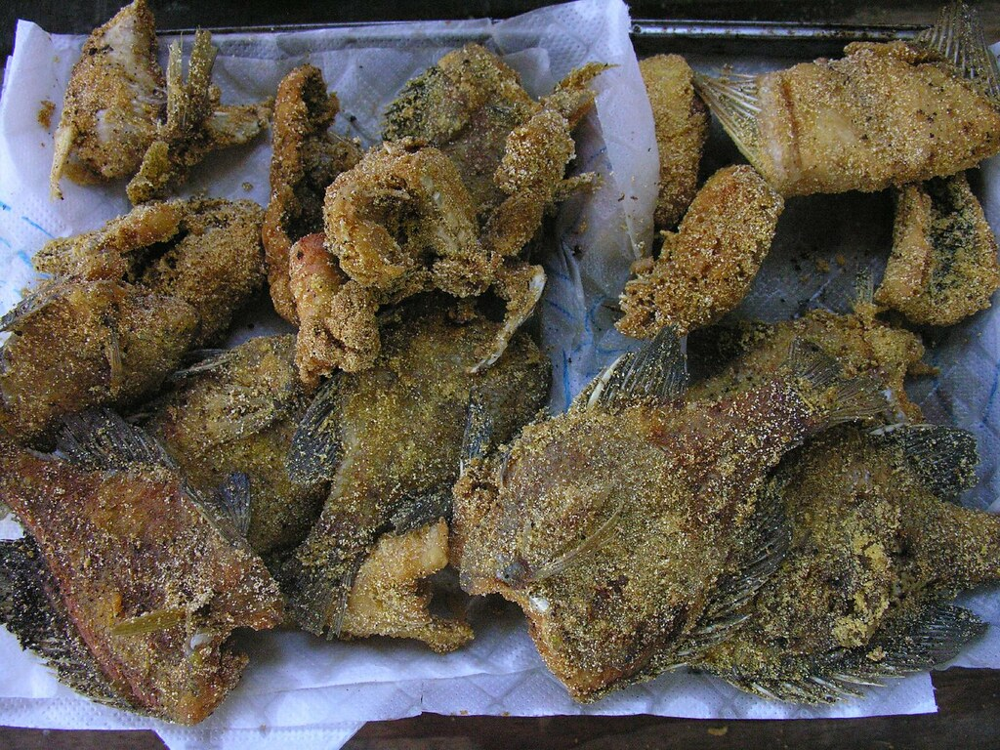

Bluegill Fish Fry

Breading or batter for a fish fry!
Don't have a credit for this recipe, its been written on a scrap of paper in the cupboard for a couple decades and is great for cooking up fish.
Ingredients
- 1 cup flour
- 1/2 cup milk
- 1/2 cup water
- 1/4 teaspoon baking powder
- 1 teaspoons salt
Instructions
- Combine all ingredients
- Wisk until smooth
- Heat oil to 365 fahrenheit
- Cook for 2 minutes on each side turning only once
- Place on paper towel and then wire rack (so the bottom doesn't get soggy)